প্রতিটা এজেন্সি একটা নিজস্ব ওয়েবসাইট পায়। সেখানে আপনার প্যাকেজ, পরিচিতি, ছবি, হাজীদের মতামত আর একটা জিজ্ঞাসার ফর্ম থাকে। কেউ ফর্ম পূরণ করলে তা সরাসরি আপনার জিজ্ঞাসা তালিকায় আসে। লিংকটা Facebook পেজ, WhatsApp বা ভিজিটিং কার্ডে দিন।
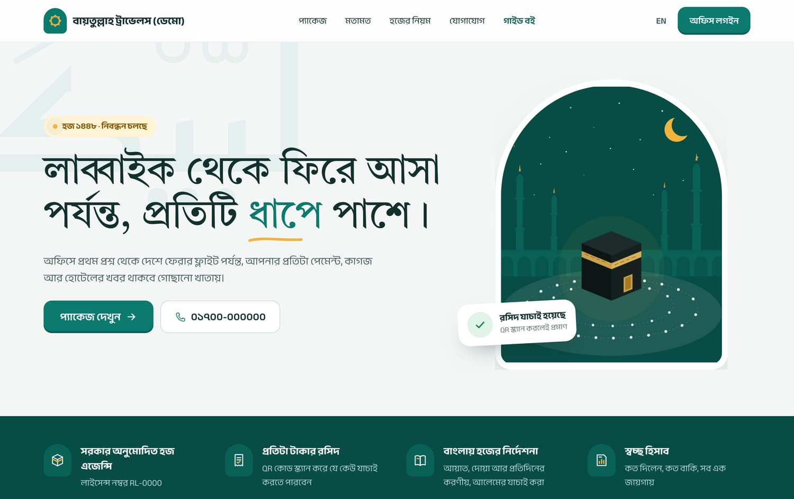
এজেন্সির ওয়েবসাইট যেমন দেখায় (রং, ছবি, লেখা আপনি নিজে ঠিক করবেন)
১৩.১ সাধারণ
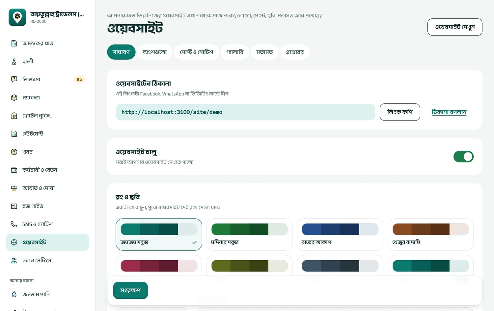
ওয়েবসাইট → সাধারণ: ঠিকানা, চালু-বন্ধ, রং আর ছবি
ওয়েবসাইটের ঠিকানা:লিংক কপি করে শেয়ার করুন। ঠিকানা বদলান দিয়ে নিজের পছন্দের ঠিকানা দিন: ইংরেজি ছোট অক্ষর, সংখ্যা আর হাইফেন, ৩–৪০ অক্ষর, যেমন al-madina-travels। ঠিকানা বদলালে পুরোনো লিংক আর কাজ করে না।
ওয়েবসাইট চালু: শুরু থেকেই চালু। বন্ধ করলে শুধু আপনি আর অ্যাডমিন দেখতে পান।
রং ও ছবি: সাতটা তৈরি রং থেকে বাছুন বা নিজের রং দিন। লোগো (বর্গাকার PNG) আর উপরের বড় ছবি দিন (JPG, PNG, WEBP, ৮ MB পর্যন্ত)। বড় ছবি না দিলে একটা আঁকা কাবার ছবি দেখায়।
আপনার কথা: বড় শিরোনাম আর এজেন্সির পরিচিতি, বাংলায় (ইংরেজি ঐচ্ছিক)।
যোগাযোগ: ফোন, WhatsApp, ইমেইল, অফিস খোলার সময়, ঠিকানা, Facebook আর YouTube লিংক। এগুলো রসিদেও ছাপা হয়।
প্রতিটা অংশ বদলে সংরক্ষণ চাপুন। উপরে ডানে ওয়েবসাইট দেখুন চেপে ফল দেখুন।
১৩.২ বাকি ট্যাব
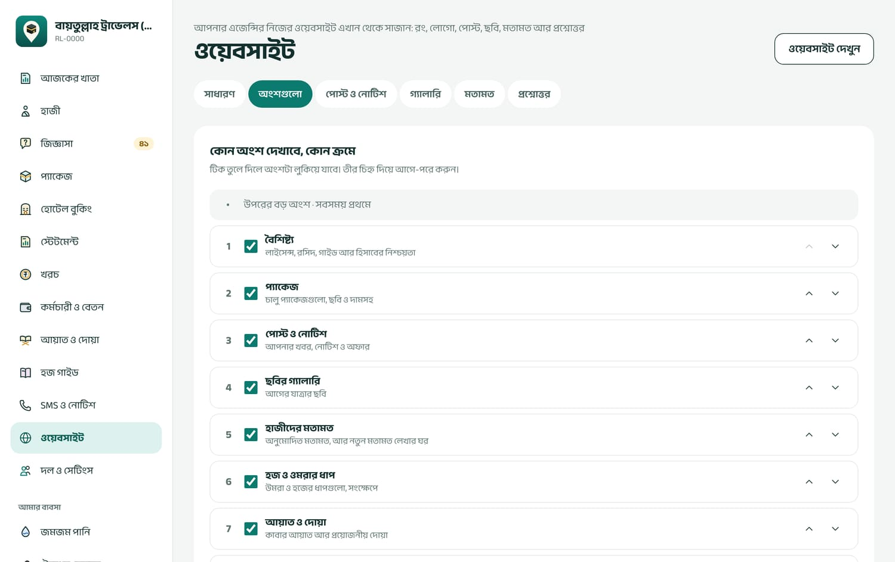
অংশগুলো: কোন অংশ দেখাবে আর কোন ক্রমে
অংশগুলো
বৈশিষ্ট্য, প্যাকেজ, পোস্ট ও নোটিশ, ছবির গ্যালারি, হাজীদের মতামত, হজ ও ওমরার ধাপ, আয়াত ও দোয়া, প্রশ্নোত্তর, জিজ্ঞাসা ও যোগাযোগ। টিক তুলে লুকান, তীর দিয়ে উপরে-নিচে নিন, তারপর ক্রম সংরক্ষণ। ফাঁকা অংশ নিজে থেকে লুকিয়ে থাকে।
পোস্ট ও নোটিশ
নতুন পোস্ট: ধরন (খবর / নোটিশ / অফার), শিরোনাম, লেখা, ছবি। “এখনই প্রকাশ করুন” টিক না দিলে খসড়া থাকে। “সবার উপরে রাখুন” দিলে প্রথমে দেখায়। লেখায় ফাঁকা লাইন দিলে নতুন অনুচ্ছেদ, “## ” দিলে উপশিরোনাম, “- ” দিলে তালিকা।
গ্যালারি
একসাথে অনেক ছবি দিন (সর্বোচ্চ ৬০টা)। বড় ছবি নিজে থেকে ছোট হয়, ছবির লোকেশন তথ্য মুছে ফেলা হয়। প্রতিটা ছবির নিচে লেখা দিতে পারেন।
মতামত
দর্শনার্থীরা “আপনার অভিজ্ঞতা লিখুন” দিয়ে মতামত দিলে তা “অপেক্ষমাণ” থাকে। আপনি প্রকাশ করুন বা লুকান। অফিস থেকে হাজীর মতামত নিজেও যোগ করতে পারেন। মেনুর পাশের সংখ্যা বলে কতগুলো অপেক্ষায় আছে।
প্রশ্নোত্তর
হাজীরা যা প্রায়ই জিজ্ঞেস করেন: প্রশ্ন আর উত্তর।
ওয়েবসাইটে প্যাকেজ ও জিজ্ঞাসার ফর্ম
শুধু চালু প্যাকেজ দেখায়, দাম, দিন, বিবরণ আর ছবিসহ। “আগ্রহ জানান” চাপলে ওই প্যাকেজ বাছা অবস্থায় জিজ্ঞাসার ফর্ম খোলে।
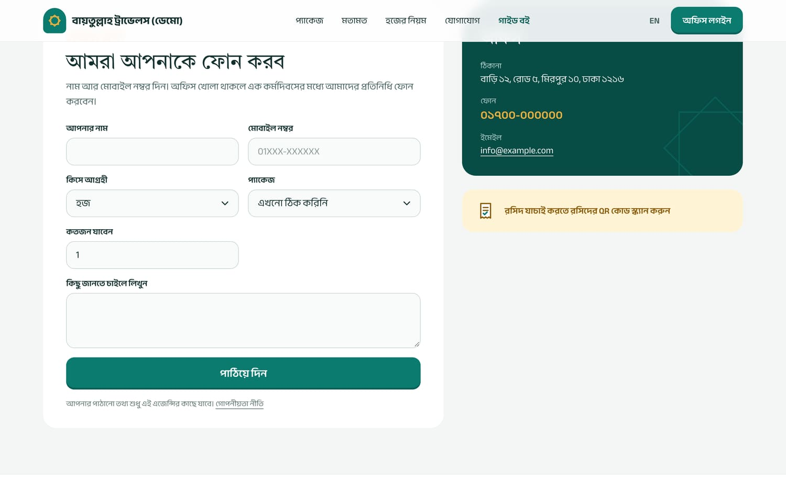
ওয়েবসাইটের “আমরা আপনাকে ফোন করব” ফর্ম
ওয়েবসাইট থেকে জিজ্ঞাসা এলে কোনো ইমেইল বা SMS যায় না। দিনে কয়েকবার জিজ্ঞাসা মেনুর সংখ্যাটা দেখুন।
১৪SMS ও নোটিশ
মেনু: SMS ও নোটিশ কে পারবেন: মালিক, অ্যাডমিন
SMS পাঠানোর ব্যবস্থা সার্ভারে চালু থাকলে তবেই এই মেনু দেখায়। মেনুতে না দেখলে বুঝবেন আপনার সার্ভারে এখনো SMS চালু হয়নি; দরকার হলে সাপোর্টে যোগাযোগ করুন।
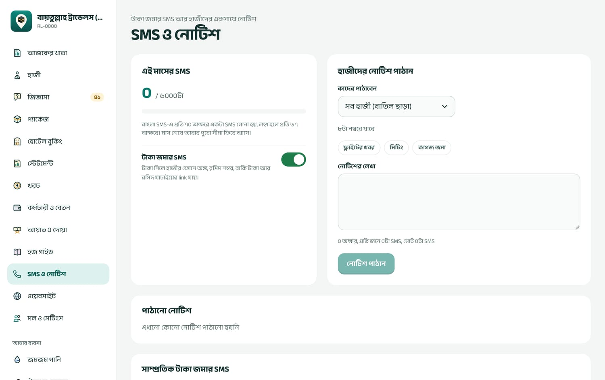
SMS ও নোটিশ: এই মাসে কত SMS গেল, টাকা জমার SMS চালু-বন্ধ, আর হাজীদের নোটিশ
এই মাসের SMS: প্ল্যানের কোটার কতটা খরচ হলো। বাংলায় প্রতি ৭০ অক্ষরে (লম্বা হলে ৬৭) একটা SMS গোনা হয়; প্রতি মাসে কোটা নতুন হয়।
টাকা জমার SMS: চালু থাকলে প্রতিবার টাকা নেওয়ার পর হাজী SMS পান: কত জমা হলো, রসিদ নম্বর, কত বাকি, আর রসিদ যাচাইয়ের লিংক।
হাজীদের নোটিশ পাঠান: কাদের পাঠাবেন বাছুন (সব হাজী, একটা প্যাকেজের হাজী, বা একটা অবস্থার হাজী)। তৈরি নমুনা (ফ্লাইটের খবর, মিটিং, কাগজ জমা) থেকে শুরু করতে পারেন। নিচে দেখায় কতজনের কাছে যাবে আর মোট কত SMS খরচ হবে। নোটিশ পাঠান চাপলে আবার নিশ্চিত করতে বলবে।
পাঠানো SMS ফেরত আনা যায় না। পাঠানোর আগে লেখাটা আর কাদের যাচ্ছে তা আরেকবার দেখুন।
১৫আয়াত-দোয়া, হজ গাইড ও গাইড বই
১৫.১ আয়াত ও দোয়া
মেনু: আয়াত ও দোয়া অনুমোদন করতে পারেন: মালিক, অ্যাডমিন, আলেম
ওয়েবসাইট আর রসিদে যে আয়াত, দোয়া আর হজের ধাপ দেখায়, সেগুলোর আরবি যাচাই করা উৎস থেকে নেওয়া। বাংলা অর্থ আপনার আলেম অনুমোদন করলে তবেই “অনুমোদিত” হিসেবে দেখায়।
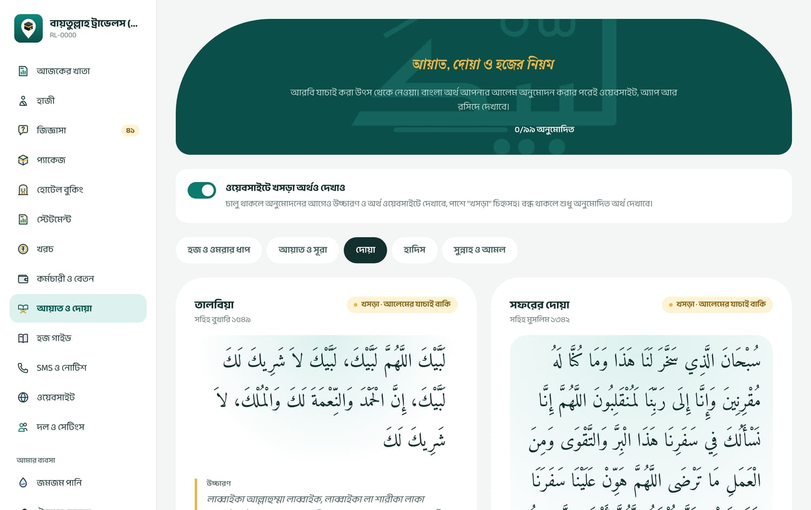
প্রতিটা দোয়ার পাশে অবস্থা: খসড়া, আলেম অনুমোদিত বা সংশোধন চাওয়া হয়েছে
ট্যাব বাছুন: হজ ও ওমরার ধাপ, আয়াত ও সূরা, দোয়া, হাদিস, সুন্নাহ ও আমল।
অর্থ ঠিক থাকলে যেমন আছে অনুমোদন। বদলাতে চাইলে অর্থ সম্পাদনা করে সংশোধন করে অনুমোদন। আরও দেখা দরকার মনে হলে মন্তব্যসহ সংশোধন চাই।
ওয়েবসাইটে খসড়া অর্থও দেখাও চালু থাকলে অনুমোদনের আগেও অর্থ দেখায়, পাশে লেখা থাকে “খসড়া অনুবাদ · আলেমের যাচাই বাকি”। বন্ধ করলে শুধু অনুমোদিত অর্থ দেখায়।
১৫.২ হজ গাইড (নিজের লেখা)
মেনু: হজ গাইড লিখতে পারেন: মালিক, অ্যাডমিন, স্টাফ
হাজীদের জন্য নিজের লেখা নির্দেশনা: কাগজপত্র, খরচ, স্বাস্থ্য ও টিকা, সাধারণ প্রশ্ন ইত্যাদি। নতুন লেখা চাপুন, বিভাগ বেছে বাংলা ও ইংরেজি দুই ভাষাতেই শিরোনাম আর লেখা দিন, “প্রকাশ করুন” টিক দিয়ে সংরক্ষণ করুন। শুরুতে নমুনা লেখা যোগ করুন চাপলে ৭টা খসড়া তৈরি হয়, সেগুলো বদলে নিতে পারেন। লেখা মোছা যায় না, তবে প্রকাশ না করে রাখা যায়।
১৫.৩ গাইড বই (সবার জন্য)
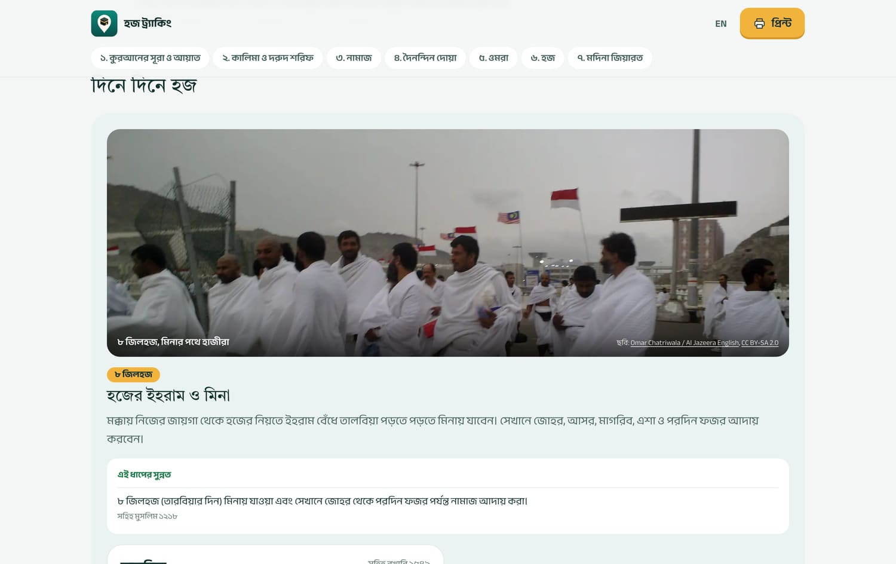
গাইড বই: হজ, ওমরা, নামাজ, দোয়া; আরবি, উচ্চারণ, বাংলা অর্থ আর তিলাওয়াত
hajj.takatracker.com/guide একটা তৈরি করা বই, লগইন ছাড়াই যে কেউ পড়তে পারেন: কুরআনের সূরা, কালিমা ও দরুদ, নামাজ, দৈনন্দিন দোয়া, ওমরা, হজ আর মদিনা জিয়ারত। আরবিতে চাপ দিলে বা তিলাওয়াত শুনুন চাপলে শুদ্ধ তিলাওয়াত শোনা যায়। লেখার আকার বদলানো, খোঁজা আর প্রিন্ট করা যায়। আপনার ওয়েবসাইটের “গাইড বই” লিংক এখানেই আনে। হাজীদের ফোনে এই লিংক দিয়ে দিন।
১৬দল ও সেটিংস: কর্মীদের লগইন
মেনু: দল ও সেটিংস কে পারবেন: মালিক, অ্যাডমিন
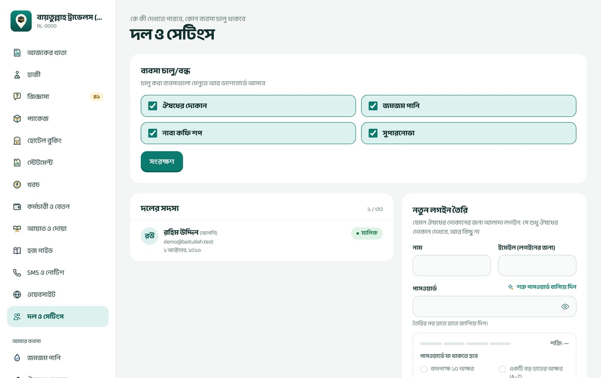
উপরে কোন ব্যবসা চালু, নিচে দলের সদস্য আর নতুন লগইন তৈরি
ব্যবসা চালু/বন্ধ
কোন দোকান মেনু আর ড্যাশবোর্ডে আসবে তা টিক দিয়ে সংরক্ষণ করুন। প্ল্যানে না থাকলে ঘরটা ধূসর থাকে। বন্ধ করলে কোনো তথ্য মোছে না, শুধু লুকিয়ে যায়।
নতুন কর্মীর লগইন
নাম আর ইমেইল (লগইনের জন্য) দিন। ইমেইলটা অবশ্যই কর্মীর নিজের হতে হবে, কারণ নতুন ডিভাইসে লগইনের সময় সেখানে কোড যায়।
শক্ত পাসওয়ার্ড বানিয়ে দিন চাপুন (বা নিজে দিন)।
ভূমিকা বেছে নিন (অধ্যায় ১.১ দেখুন)। দোকানের লগইন হলে কোন দোকান খুলতে পারবেন তা বাছুন।
লগইন তৈরি করুন চাপুন। পর্দায় ইমেইল আর পাসওয়ার্ড দেখায়; কর্মীকে হাতে হাতে জানিয়ে দিন। কোনো ইমেইল যায় না।
ভূমিকা বদলাতে সদস্যের পাশে সম্পাদনা। মালিক বা নিজের ভূমিকা বদলানো যায় না; অ্যাডমিন বানাতে বা বদলাতে পারেন শুধু মালিক।
কেউ চাকরি ছাড়লে সাথে সাথে দল থেকে বাদ দিন। তিনি সঙ্গে সঙ্গে লগআউট হয়ে যান। তাঁর করা কাজ আর রসিদ থেকে যায়।
প্ল্যানে কতজনের লগইন রাখা যায় তা উপরে “n / মোট” দেখায় (মালিকসহ)।
একটা লগইন কয়েকজন মিলে ব্যবহার করবেন না। আলাদা লগইন থাকলে কে কোন রসিদ কাটলেন, কে কোন কাগজ যাচাই করলেন, সব আলাদা করে দেখা যায়।
সফটওয়্যারের ভেতরে পাসওয়ার্ড বদলানোর আলাদা পাতা নেই। কর্মী নিজের পাসওয়ার্ড বদলাতে চাইলে লগইন পাতার পাসওয়ার্ড ভুলে গেছেন? দিয়ে নতুন পাসওয়ার্ড দেবেন।
১৭লগইন, পাসওয়ার্ড ও ডিভাইসের নিরাপত্তা
১৭.১ লগইন আর নতুন ডিভাইস
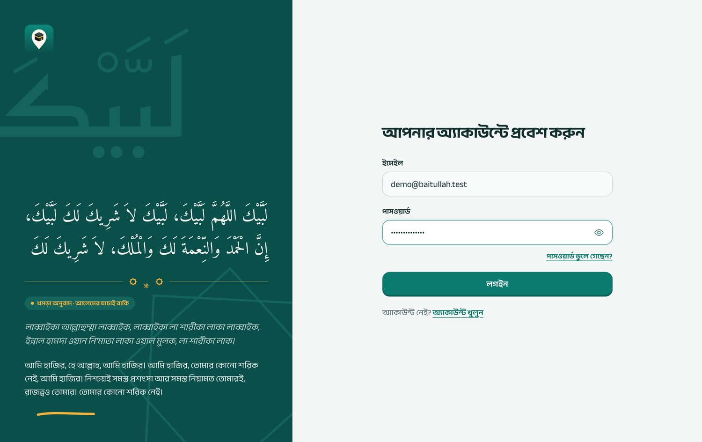
লগইন: ইমেইল আর পাসওয়ার্ড
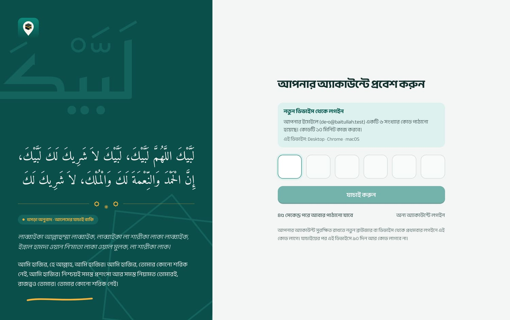
নতুন কম্পিউটার বা ফোন থেকে প্রথমবার: ইমেইলে আসা কোড
নতুন কম্পিউটার, ফোন বা ব্রাউজার থেকে প্রথমবার লগইন করলে আপনার ইমেইলে ৬ সংখ্যার কোড যায়। কোড দিলে ওই ডিভাইস ৯০ দিন “বিশ্বস্ত” থাকে, আর কোড লাগে না।
একই ইমেইলে ৫ বার ভুল পাসওয়ার্ড দিলে ১৫ মিনিট লগইন বন্ধ থাকে।
লগইন ৭ দিন থাকে; নিয়মিত ব্যবহার করলে নিজে থেকে বাড়ে। অন্যের কম্পিউটারে কাজ শেষে লগআউট করুন।
১৭.২ পাসওয়ার্ড ভুলে গেলে
লগইন পাতায় পাসওয়ার্ড ভুলে গেছেন? চাপুন, ইমেইল দিন, কোড পাঠান। ইমেইলে আসা কোড দিয়ে নতুন পাসওয়ার্ড দুবার লিখে পাসওয়ার্ড সেভ করে লগইন। পাসওয়ার্ড বদলালে অন্য সব ডিভাইস থেকে লগআউট হয়ে যায়, আর ইমেইলে সতর্কবার্তা যায়। দিনে সর্বোচ্চ ২ বার রিসেট করা যায়।
১৭.৩ আমার ডিভাইস
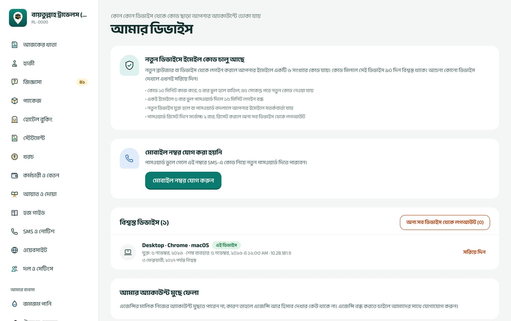
আমার ডিভাইস: কোন কোন ডিভাইস থেকে কোড ছাড়া ঢোকা যায়
মেনুর নিচে আমার ডিভাইস-এ দেখা যায় কোন কোন ডিভাইস বিশ্বস্ত, কবে শেষ ব্যবহার হয়েছে। চেনা নয় এমন কিছু দেখলে সরিয়ে দিন, অথবা অন্য সব ডিভাইস থেকে লগআউট চাপুন, তারপর পাসওয়ার্ড বদলান। নতুন ডিভাইস যুক্ত হলে আপনার ইমেইলে সতর্কবার্তা যায়; অচেনা সতর্কবার্তা পেলে সাথে সাথে পাসওয়ার্ড বদলান।
১৭.৪ তথ্যের গোপনীয়তা
NID আর পাসপোর্ট নম্বর এনক্রিপ্ট করে রাখা হয়, পর্দায় আংশিক দেখায়। পুরো নম্বর বা পাসপোর্ট-NID-এর কপি কে কখন দেখলেন, তা লেখা থাকে।
প্রতিটা এজেন্সির তথ্য আলাদা; এক এজেন্সি আরেক এজেন্সির কিছু দেখতে পায় না।
কেউ নিজের তথ্য মুছে ফেলতে বললে মালিক বা অ্যাডমিন তা স্থায়ীভাবে মুছতে পারেন (অধ্যায় ৬.৪)। টাকার হিসাব থেকে যায়, নাম থাকে না।
কোনো কর্মী নিজের অ্যাকাউন্ট মুছতে চাইলে আমার ডিভাইস পাতার নিচে পাসওয়ার্ড দিয়ে তা করতে পারেন। মালিক নিজের অ্যাকাউন্ট মুছতে পারেন না; এজেন্সি বন্ধ করতে সাপোর্টে যোগাযোগ করুন।
পুরো গোপনীয়তা নীতি: hajj.takatracker.com/privacy
১৮ফোনে অ্যাপ হিসেবে ব্যবহার
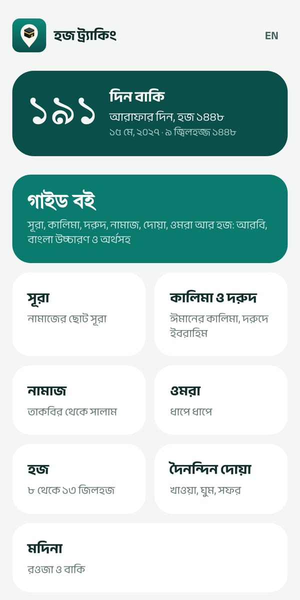
ইনস্টল করা অ্যাপের শুরুর পাতা
ফোনে রসিদ যাচাই
পুরো সফটওয়্যার ফোনের ব্রাউজারেই চলে। চাইলে হোম স্ক্রিনে অ্যাপের মতো রাখা যায়:
Android: Chrome-এ hajj.takatracker.com/start খুলে অ্যাপ ইনস্টল করুন চাপুন। Play Store-এও “হজ ট্র্যাকিং” অ্যাপ আছে।
iPhone: Safari-তে খুলে নিচের Share বোতাম (□↑) চাপুন, তারপর “Add to Home Screen”।
অ্যাপের শুরুর পাতায় আরাফার দিনের কাউন্টডাউন, গাইড বইয়ের অধ্যায়গুলো, আর কর্মীদের জন্য software খুলুন বোতাম থাকে।
ইন্টারনেট ছাড়া শুধু গাইড বই খোলে (তিলাওয়াত শুনতে ইন্টারনেট লাগে)। এজেন্সির কোনো তথ্য ফোনে জমা থাকে না, তাই হাজী, টাকা, রসিদের কাজে ইন্টারনেট লাগবে।
১৯ভুল এন্ট্রি ঠিক করা: এক নজরে
সফটওয়্যারের মূল নিয়ম: টাকার কোনো এন্ট্রি মোছা বা বদলানো যায় না, বাতিল করে নতুন করে লিখতে হয়। বাতিল যেদিন করবেন সেদিনের হিসাবে ওঠে, আর কে, কখন, কেন বাতিল করলেন তা থেকে যায়।
যা কখনো ফেরানো যায় না: রসিদ, খরচ বা বিক্রির বাতিল; পরিশোধিত বেতন শিট; কারও ব্যক্তিগত তথ্য মুছে ফেলা; জিজ্ঞাসা, পোস্ট বা মতামত মুছে ফেলা; পাঠানো SMS; কর্মীকে দল থেকে বাদ দেওয়া (আবার আনতে নতুন লগইন লাগে)।
কী ভুল হয়েছে
কীভাবে ঠিক করবেন
কে পারবেন
হাজীর রসিদে ভুল অঙ্ক বা মাধ্যম
হাজীর পাতা → পেমেন্ট ও রসিদ → রসিদ বাতিল (কারণসহ) → সঠিক অঙ্কে আবার টাকা গ্রহণ
মালিক, অ্যাডমিন, হিসাবরক্ষক
ভুল হাজীর নামে টাকা নিয়েছেন
ওই রসিদ বাতিল করুন, সঠিক হাজীর পাতায় আবার টাকা নিন
মালিক, অ্যাডমিন, হিসাবরক্ষক
হাজীর নাম, ফোন, ঠিকানা ইত্যাদি ভুল
হাজীর পাতা → তথ্য সম্পাদনা (ভরা ঘর ফাঁকা করা যায় না, শুধু বদলানো যায়)
সবাই
হাজীর প্যাকেজ বা ছাড় ভুল
নিবন্ধনের পর বদলানো যায় না। হাজীর অবস্থা “বাতিল” করুন, তাঁর রসিদগুলো বাতিল করুন, সঠিক প্যাকেজে আবার নিবন্ধন করে (একই পাসপোর্ট নিশ্চিত করে) টাকা আবার তুলুন
নিবন্ধন সবাই; রসিদ বাতিল ও ছাড় মালিক, অ্যাডমিন, হিসাবরক্ষক
ভুল কাগজ আপলোড
সঠিক কাগজ আবার আপলোড করুন; সবশেষটাই গোনা হয়
সবাই
প্যাকেজের দাম বা নাম ভুল
সঠিক তথ্যে নতুন প্যাকেজ বানান, পুরোনোটা বন্ধ করুন
মালিক, অ্যাডমিন
জিজ্ঞাসা ভুল লেখা
মুছুন, তারপর নতুন করে লিখুন
মালিক, অ্যাডমিন
খরচ ভুল
খরচ পাতায় সারির পাশে বাতিল → সঠিক খরচ আবার লিখুন
মালিক, অ্যাডমিন, হিসাবরক্ষক
হোটেলকে ভুল পরিশোধ
খরচ পাতায় “হোটেল” সারিটা বাতিল → আবার লিখুন
মালিক, অ্যাডমিন, হিসাবরক্ষক
হোটেল বুকিংয়ের তারিখ, রুম, ভাড়া ভুল
বুকিং সম্পাদনা
মালিক, অ্যাডমিন, হিসাবরক্ষক, স্টাফ
বেতন শিটে ভুল (খসড়া)
সারির সম্পাদনা
মালিক, অ্যাডমিন, হিসাবরক্ষক
বেতন শিটে ভুল (লক করা)
আবার খুলুন → ঠিক করুন → আবার লক
মালিক, অ্যাডমিন
বেতন শিটে ভুল (পরিশোধিত)
বদলানো যায় না; পরের মাসের শিটে কর্তন বা ভাতা দিয়ে সমন্বয়
মালিক, অ্যাডমিন, হিসাবরক্ষক
কর্মচারীর অগ্রিম ভুল
বাতিল করা যায় না; বেতন থেকে কর্তন দিয়ে সমন্বয়
মালিক, অ্যাডমিন, হিসাবরক্ষক
দোকানের বিক্রি ভুল
বিক্রির তালিকা → বাতিল (স্টক আর বকেয়া নিজে থেকে ফেরে) → আবার বিক্রি
মালিক, অ্যাডমিন, হিসাবরক্ষক
স্টক ভুল
পণ্যের পাতা → স্টক ঠিক করুন (কমাতে − দিয়ে, কারণসহ)
দোকানে প্রবেশাধিকার যাঁর আছে
ক্রেতার বকেয়া আদায় ভুল
বাতিলের ব্যবস্থা নেই। সাবধানে লিখুন; বড় ভুল হলে সাপোর্টে যোগাযোগ করুন
—
২০প্রতিদিন ও প্রতি মাসের কাজ
প্রতিদিন সকালে
জিজ্ঞাসা মেনুর সংখ্যা দেখুন। “ফলো-আপ” ছাঁকনি দিয়ে আজ কাকে ফোন করতে হবে দেখে নিন, ওয়েবসাইট থেকে আসা নতুন জিজ্ঞাসায় ফোন করুন।
ওয়েবসাইটের নতুন মতামত (মেনুর পাশে সংখ্যা) প্রকাশ বা লুকান।
সারাদিন
যে টাকা আসবে, সাথে সাথে হাজীর পাতায় টাকা গ্রহণ করে রসিদ প্রিন্ট করে দিন। হাতে লেখা রসিদ দেবেন না।
হাজী কাগজ জমা দিলে তখনই আপলোড করুন; সময় করে যাচাই করুন।
খরচ হলে সেদিনই খরচ পাতায় লিখুন।
দিন শেষে
স্টেটমেন্ট (দৈনিক) খুলে আজকের জমা মাধ্যম অনুযায়ী দেখুন: নগদ যা দেখাচ্ছে, ক্যাশে তা আছে কি না; bKash/ব্যাংকের অঙ্ক অ্যাকাউন্টের সাথে মিলছে কি না।
প্রতিটা দোকানের দৈনিক হিসাব-এর “দিনশেষে হাতে থাকার কথা” ক্যাশের সাথে মেলান।
দরকার হলে স্টেটমেন্ট প্রিন্ট করে ফাইলে রাখুন।
প্রতি সপ্তাহে
হাজী তালিকায় বকেয়া কলাম দেখে কিস্তির কথা মনে করিয়ে দিন।
প্রত্যেক হাজীর “চূড়ান্ত করার প্রস্তুতি” দেখে কার কোন কাগজ বাকি, তা জানিয়ে দিন। পাসপোর্টের মেয়াদ ৬ মাসের কম হলে লাল দেখায়।
ঔষধের দোকানে “মেয়াদ শেষ হয়ে আসছে” তালিকা আর “স্টক কম” দেখুন।
মাসের শেষে
কর্মচারী ও বেতন: শিট তৈরি → অনুপস্থিতি, ওভারটাইম, অগ্রিম কর্তন বসান → প্রিন্ট করে মিলিয়ে লক → বেতন দিয়ে “পরিশোধ করুন”।
স্টেটমেন্ট মাসিক দেখে ব্যবসা অনুযায়ী আয়-ব্যয় আর শেষ জের প্রিন্ট করে রাখুন।
আমার ডিভাইস আর দল ও সেটিংস দেখুন: যাঁরা চলে গেছেন তাঁদের বাদ দিন, অচেনা ডিভাইস সরান।
হজের মৌসুমের আগে
নতুন মৌসুমের প্যাকেজ বানান, আগের মৌসুমেরগুলো বন্ধ করুন।
হোটেল বুকিং করে হাজীদের রুমে বসান, রুমিং লিস্ট প্রিন্ট করে হোটেলে পাঠান।
যাঁদের সব শর্ত পূরণ হয়েছে, তাঁদের অবস্থা “যাত্রার জন্য প্রস্তুত” করুন।
২১সাধারণ সমস্যা ও সমাধান
লগইনের কোড ইমেইলে আসছে না
স্প্যাম/প্রমোশন ফোল্ডার দেখুন। ৪৫ সেকেন্ড পরে “নতুন কোড পাঠান”। কোড ১০ মিনিট পর বাতিল হয়।
“ভুল পাসওয়ার্ড ৫ বার দেওয়া হয়েছে”
১৫ মিনিট অপেক্ষা করুন, অথবা “পাসওয়ার্ড ভুলে গেছেন?” দিয়ে নতুন পাসওয়ার্ড দিন।
“এই কাজের অনুমতি আপনার নেই”
আপনার ভূমিকায় এই কাজ নেই। মালিক বা অ্যাডমিনকে বলুন কাজটা করতে, বা ভূমিকা বদলাতে।
“সাবস্ক্রিপশন চালু নেই…”
ট্রায়াল বা সাবস্ক্রিপশন শেষ। সব দেখা যায়, কিছু বদলানো যায় না। নবায়নের জন্য সাপোর্টে যোগাযোগ করুন।
“পাসপোর্ট লাইনে কোথাও ভুল আছে”
MRZ ঠিকমতো স্ক্যান হয়নি। আবার স্ক্যান করুন, বা নম্বর ও মেয়াদ হাতে লিখুন।
“এই পাসপোর্টে আগে থেকেই একজন হাজী আছেন”
আগে নিবন্ধিত। আবার যাচ্ছেন হলে নিশ্চিত করুন; না হলে খোঁজার ঘরে আগের হাজীকে খুঁজুন।
“বকেয়ার চেয়ে বেশি”
অঙ্ক ঠিক আছে কি না দেখুন। সত্যিই বেশি নিতে হলে মালিক, অ্যাডমিন বা হিসাবরক্ষক “অতিরিক্ত টাকা নিতে চাই” টিক দেবেন।
“ট্রানজেকশন নম্বর দিন”
নগদ ছাড়া অন্য মাধ্যমে (bKash, ব্যাংক) ট্রানজেকশন বা চেক নম্বর লাগবে।
“আগের তারিখে লিখতে পারেন শুধু…”
আগের তারিখের এন্ট্রি মালিক, অ্যাডমিন বা হিসাবরক্ষক করবেন, তাও সর্বোচ্চ ৩১ দিন আগের।
“সব শর্ত পূরণ না হওয়ায়…”
হাজীর কাগজ বা টাকা বাকি। “চূড়ান্ত করার প্রস্তুতি” দেখে বাকিটা শেষ করুন; জরুরি হলে মালিক বা অ্যাডমিন কারণ লিখে ব্যতিক্রম করতে পারেন।
“আপনার প্ল্যানের জায়গা ভরে গেছে”
ফাইল রাখার জায়গা শেষ। বড় প্ল্যান নিন; ভবিষ্যতে ছবি মাঝারি মানে তুলুন।
“হাজী-সীমা পূর্ণ হয়েছে” বা “সর্বোচ্চ n জনের লগইন”
প্ল্যানের সীমা শেষ। বড় প্ল্যানের জন্য যোগাযোগ করুন।
“স্টকে যথেষ্ট নেই”
স্টক তোলা হয়নি, বা ঔষধের কিছু স্টক মেয়াদোত্তীর্ণ ব্যাচে। “নতুন স্টক এল” দিয়ে স্টক তুলুন।
“বাকিতে দিলে ক্রেতা বা দোকান বেছে নিন”
বাকি বিক্রিতে নির্দিষ্ট ক্রেতা লাগে। আগে ক্রেতা যোগ করুন।
“শিট লক করা, আগে খুলুন”
মালিক বা অ্যাডমিন “আবার খুলুন” চাপবেন।
মেনুতে কোনো দোকান বা SMS দেখাচ্ছে না
দোকান: দল ও সেটিংস থেকে চালু করুন (প্ল্যানে থাকতে হবে)। SMS: সার্ভারে SMS চালু হলে দেখাবে।
“কিছু একটা ঠিকমতো হয়নি”
ইন্টারনেট দেখে আবার চেষ্টা করুন। বারবার হলে পর্দার ছবি তুলে সাপোর্টে পাঠান।
সাপোর্ট
কোনো সমস্যা হলে কী করছিলেন, কোন পাতায়, আর পর্দায় কী লেখা এসেছে, তার একটা ছবি (স্ক্রিনশট) তুলে হজ ট্র্যাকিং সাপোর্টে পাঠান। ছবিতে কোনো পাসওয়ার্ড বা পুরো পাসপোর্ট নম্বর যেন না থাকে।